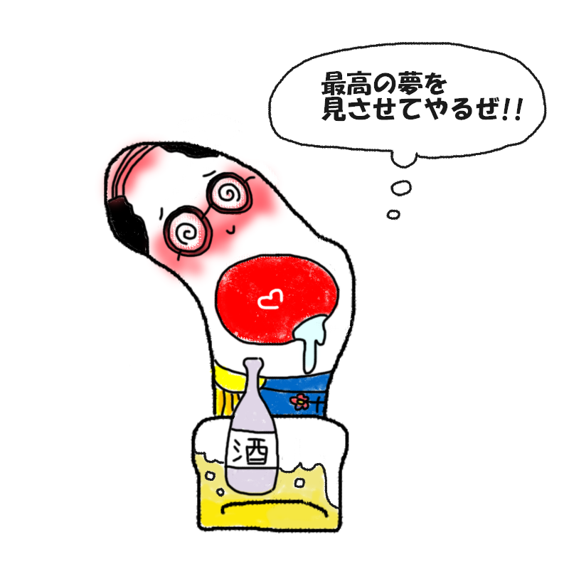

あなたの診断結果
？ ？ ？ （キャラクター名前募集中）中指の先端にあく人
【足ゆび界の絶対的センターにして無類の酒好き！
夢を語りながら自分が一番に夢の中へ旅立つ
酔いどれタイプ】

「おい相棒、まぁ一杯飲めって……ぐへぇ、もう寝るか……ZZZ」
5本指の真ん中でドンと構える頼れるリーダー！……と思いきや、酒が入ると一瞬でつぶれる
愛され酔っ払いタイプ！
あなたは、「真ん中で圧倒的な存在感を放つ、足ゆび界の絶対的センター」です。
バランス感覚に優れ、周囲を惹きつける大きな夢や野望を語らせたら右に出る者はいません。
しかし、唯一にして最大の弱点が「酒と睡魔」。
熱く理想を語り明かそうと杯を交わした次の瞬間には、自分自身が真っ気に出来上がってしまい、爆音のいびきをかいて夢の中へと旅立ってしまいます。
靴下に穴を開けて顔を出すのも、「ちょっと外の空気を吸いながら一杯引っかけたくてな……」という気まぐれな理由から。
どこか憎めない大ざっぱさと人徳で、周りからいつも介抱されているアイドル的存在です。
酔いどれリーダーの生態
- 「俺についてこい！」と言った15分後に膝枕で寝ている
- 穴から顔を出す理由は「蒸れるから」ではなく「風が気持ちいいから」
- 酒席の失敗談は数知れず、翌朝「何も覚えてない」と爽やかに笑い飛ばす
- ポンコツだけど、なぜか周囲が「しょうがないな」と助けたくなる愛嬌の塊
最後にひとつ。
今日も夢と千鳥足で人生を突き進む、
頼もしき酔いどれセンターよ。
今夜も気持よ～く酔っぱら we、
豪快に寝落ちするのだ！
このキャラクターに名前をつける
思いついた名前を教えてね！
※このスタンプには日陰に消えたボツキャラが混ざっています
※この診断はただのお遊びです。
※靴下の穴が開く場所には個人差があります。